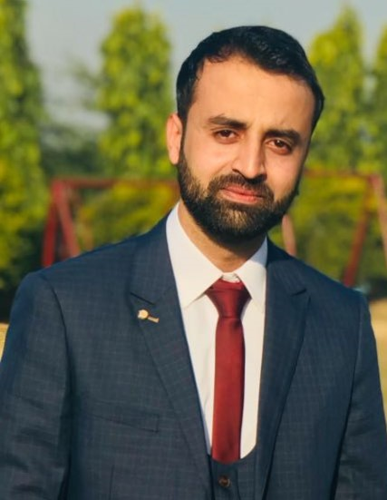

|

|
|
Lecturer at Faculty of Software Engineering
Office: SE - 3002
Email: afzal.se@must.edu.pk
Mirpur University of Sciecne and Technology
Bio:
Engr. Afzal Ahmed is a Lecturer in the Department of Software Engineering at Mirpur University of
Science and Technology. His research interests include artificial intelligence, software correctness, software defined networking, machine learning, spatiotemporal data enrichment, segmentation,
classification, clustering, and visualization.
Afzal started programming at the age of sixteen and has been interested in computer science, software
engineering, and practice of algorithm design. His master's research focuses on developing algorithms
for context aware decision trees prospecting the marketing and recommendation systems.
He has also developed the mutation testing methodologies and implementation on fundamentally
concurrent programs. He has supervised many undergraduate projects and co-authored couple of research articles. Prior to
joining MUST he was working as Software Engineer at various small size companies where he was
developing proprietry solutions.
|